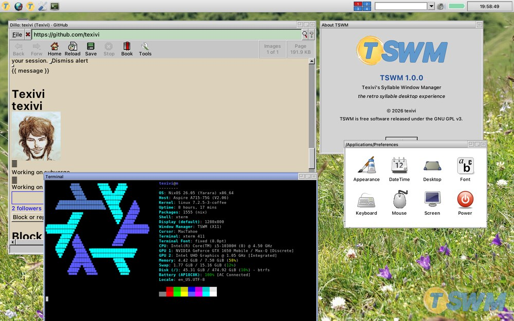
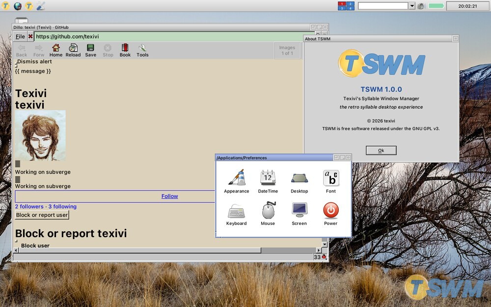

TSWM
I made TSWM to learn X11, and because I like how Syllable looks. Syllable Desktop 0.6.6 was the one I copied.


The wallpapers are a mix. Some are photographs, and some are made by a small generator I wrote, mkwall, so that the desktop has plain ones that fit the style.
The source is at github.com/texivi/tswm.